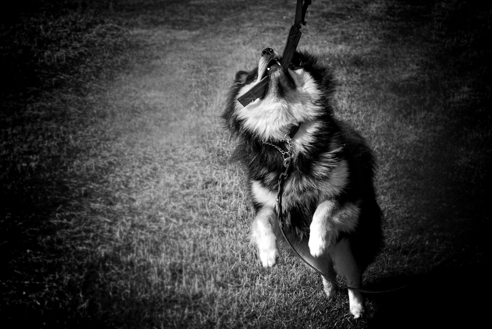
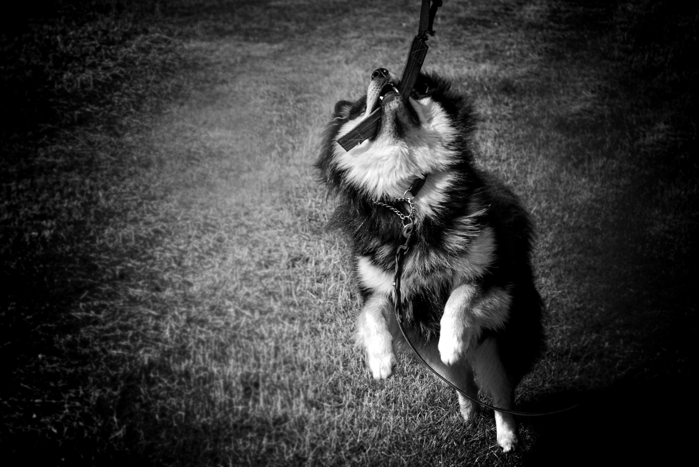

Galleri
I det här galleriet så har jag valt att visa upp lite av mig själv och min hund. Ljudfilerna har jag bäddat in
från Wikimedia.
Bilder
 Fotografi: Mathilda Hansson

Fotografi: Mathilda Hansson
Fotografi: Mathilda Hansson

Fotografi: Mathilda Hansson
 Fotografi: Mathilda Hansson
Fotografi: Mathilda Hansson
Videos
Mathilda marklyfter 150 kg på serie 1 i januari 2020.
Mathilda testar på knälindor för första gången.
Mathilda marklyfter 140 kg i december 2019.
Ljud
Alla ljudfiler är lånade från Wikimedia: